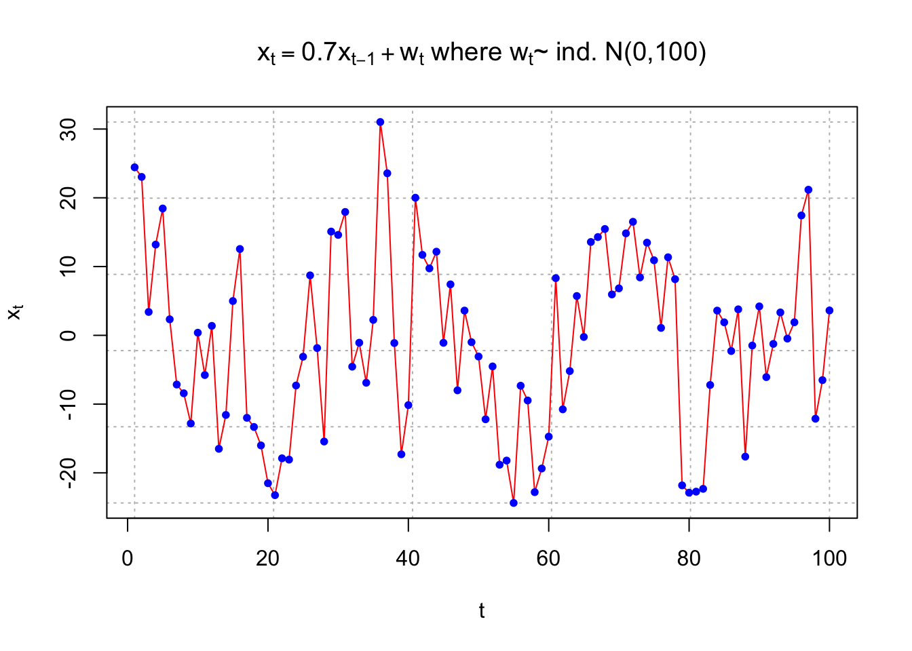
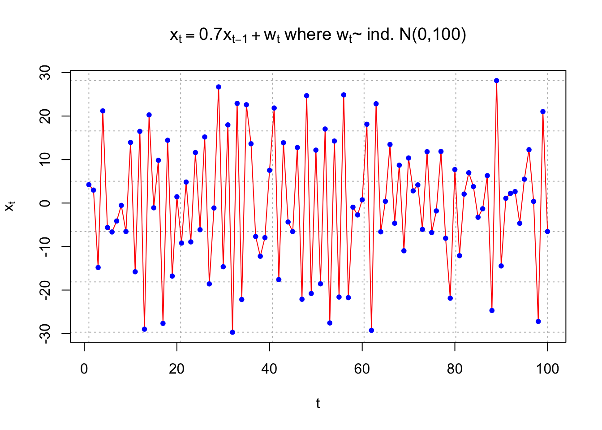
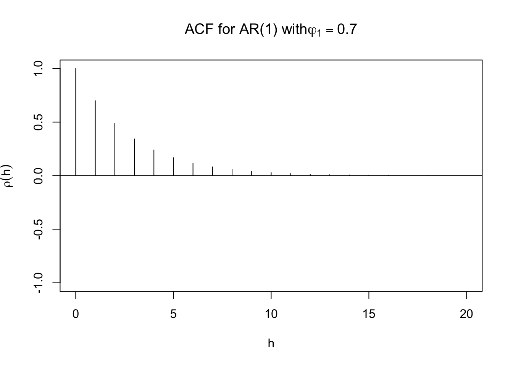
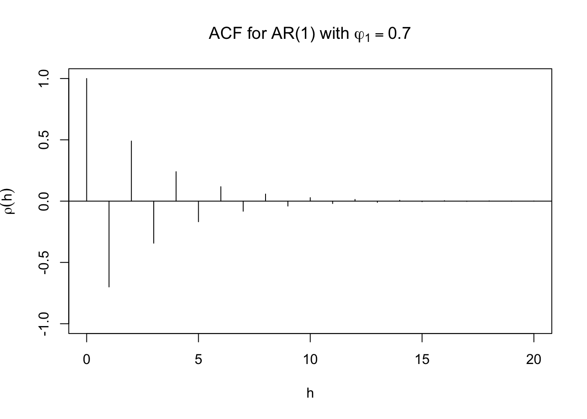
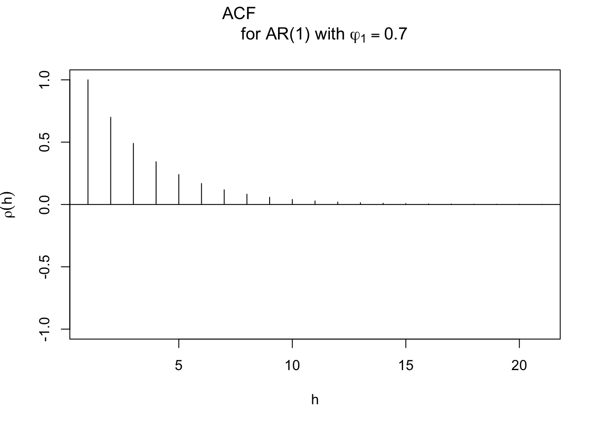
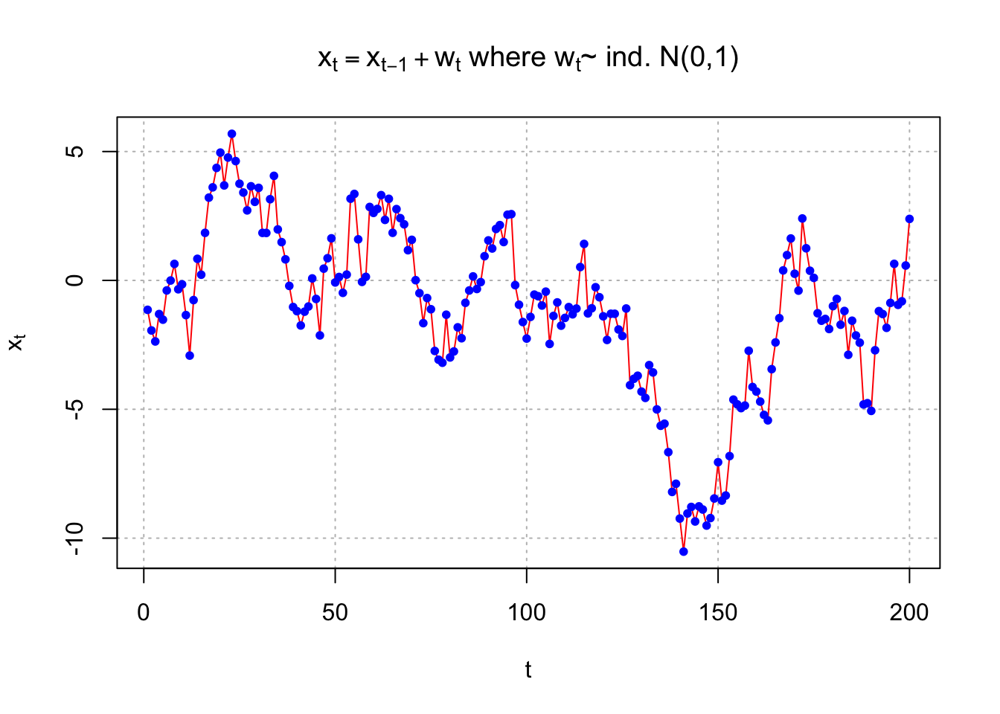
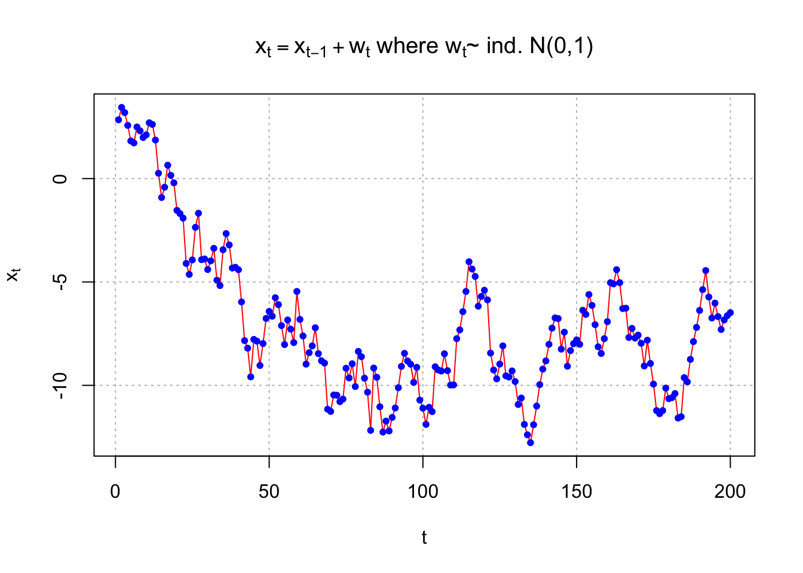
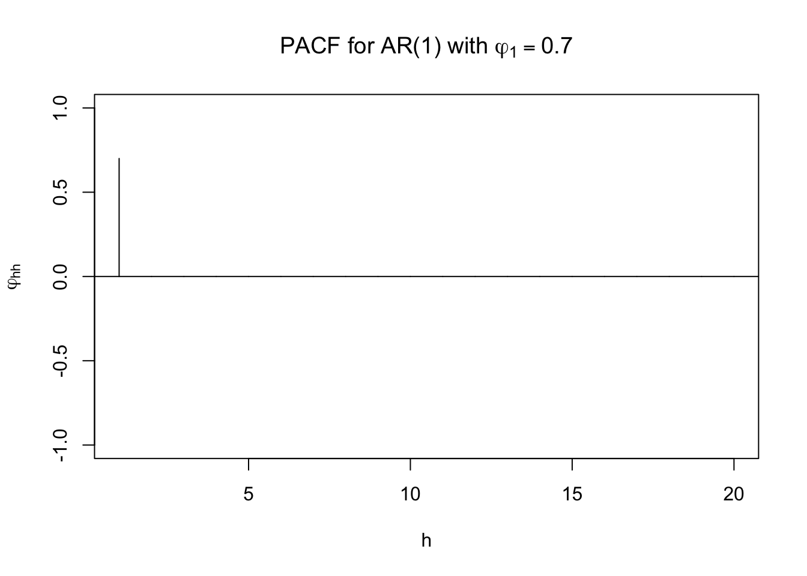

Chapter 9 Autoregressive Models
9.1 AR Models
Suppose we have a time series \(x_t\) for \(t = 1, …, n.\) Could we use the regression model of
\[x_t = \beta_0 + \beta_1t + \epsilon_t, \]
where \(\epsilon_t \sim \mathrm{ind} N(0,\sigma^2)\) for it? Yes, but stated confidence levels and type I error rates will likely be incorrect. Thus, inferences can be incorrect. The reason is the likely dependence in the time series.
While one may be able to find a set of explanatory variables that help to de-trend a response variable series so it appears that white noise is leftover (i.e., it looks like the error terms are independent), this is often not possible.
Instead, autoregressive integrated moving average models (ARIMA) are used for time series data. These models were first developed by Box and Jenkins (1970). We have already touched on all parts of this type of model:
- AR: Autoregressive
- MA: Moving average
- I: Integrated (closely related to differencing)
Often, people will refer to ARIMA models as an ARIMA process as well. This refers to how \(x_t\) comes about through a linear process. Both “model” and “process” will be used interchangeably.
9.2 Autoregressive models – AR(p)
An autoregressive model uses past observations of \(x_t\) to predict future observations. Specifically, the present value of \(x_t\) is explained by a linear function of p past values of \(x_{t-1}, …, x_{t-p}.\)
Example 9.1 AR(1) from earlier
\(x_t=0.7x_{t-1}+w_t\), where \(w_t \sim \mathrm{ind}N(0,1)\forall t=1,...,n\)
Therefore, \(x_2=0.7x_1+w_2\), \(x_3=0.7x_2+w_3,...\)
Future values may be “forecasted” by past values using
\(x_{n+1} = 0.7x_n\)
More on this later in the section.
An autoregressive model of order p, denoted as AR(p), is
\(x_t = \phi_1x_{t-1} + \phi_2x_{t-2} + … + \phi_px_{t-p} + w_t\)
where
\(\phi_1, \phi_2, …, \phi_p\) are parameters and \(w_t \sim \mathrm{ind}N(0,\sigma^2_w)\forall t=1,...,n\) (i.e., white noise)
Notes:
- To find parameter estimates later in this section, we will assume \(w_t \sim \mathrm{ind}N(0,\sigma^2_w)\)
- WLOG, the mean of \(x_t, \mu,\) will be assumed to be 0 when we write out a general model. HOWEVER, $$0 in most applications! The WLOG part is here because one can simply replace \(x_t\) with \(x_t – \mu\). The end result is an autoregressive model of
\[x_t - \mu = \phi_1(x_{t-1}-\mu) + \phi_2(x_{t-2}-\mu) + … + \phi_p(x_{t-p}-\mu) + w_t \\ \iff x_t = \mu(1-\phi_1-\phi_2-…-\phi_p) + \phi_1x_{t-1} + \phi_2x_{t-2}+ … + \phi_px_{t-p} + w_t\\ \iff x_t = \alpha + \phi_1x_{t-1} + \phi_2x_{t-2}+ … + \phi_px_{t-p} + w_t\]
where \(\alpha = \mu(1-\phi_1-\phi_2-…-\phi_p).\) The \(\alpha\) does not affect the dependence structure among the \(x_t\). This is why the common convention is to exclude the parameter when introducing these models.
When we estimate the model, we will almost always include an estimate of \(\alpha.\)
- The AR(p) model written in vector form is
\(x_t = \boldsymbol{\phi'x_{t-1}} + w_t\)
where
\(\boldsymbol{\phi} = (\phi_1, \phi_2, …, \phi_p)'\)
\(\boldsymbol{x_{t-1}} = (x_{t-1}, x_{t-2}, …, x_{t-p})'\)
- The AR(p) model written in backshift notation is
\((1-\phi_1B-\phi_2B^2-…-\phi_pB^p)x_t = w_t\)
and \(\phi(B)x_t = w_t\)
where \(\phi(B) = (1-\phi_1B-\phi_2B^2-…-\phi_pB^p)\) is called the autoregressive operator. We will be using this notation throughout the course.
- The model can be re-expressed as a linear combination of \(w_t\)’s by “iterating backwards”. For example, an AR(1) model can be represented as:
(Note: the 1 on \(\phi_1\) was dropped)
\[x_t=\phi x_{t-1}+w_t\\ =\phi(\phi x_{t-2}+w_{t-1})+w_t\\ =\phi^2x_{t-2}+\phi w_{t-1}+w_t\\ =\phi^2(\phi w_{t-3}+w{t-2})+\phi w_{t-1}+w_t\\ =\phi^3x_{t-3}+\phi^2w_{t-2}+\phi w_{t-1}+w_t\\ =\dots\\ =\sum_{j=0}^{\infty}\phi^jw_{t-j}\],
provided that \(|\phi|<1\) and variance of \(x_t\) is bounded.
To see this, note that the model can be rewritten as
\[(1-\phi B)x_t = w_t \\ \implies x_t=\frac{1}{1-\phi B}w_t\\ \implies x_t = (1+\phi B+\phi^2B^2+…)w_t \\ =\sum_{j=0}^{\infty}\phi^jB^jw_t\\ =\sum_{j=0}^{\infty}\phi^jw_{t-j}\]
using the sum of an infinite series. Remember that \(\sum_{i=0}^{\infty}a^i=\frac{1}{1-a},|a|<1\) . Writing the model as a linear combination of the \(w_t\)’s is going to be VERY useful for future work!
- The mean and autocovariance function for an AR(1) stationary model can be found easily by using the above representation.
\[E(x_t)=E(\sum_{j=0}^{\infty}\phi^jw_{t-j})\\ =\sum_{j=0}^{\infty}\phi^jE(w_{t-j})=0\]
\[\gamma(h)=Cov(x_t,x_{t+h})\\ =E(x_tx_{t+h})-E(x_tE(x_{t+h}))\\ =E(x_tx_{t+h})-0=E(x_tx_{t+h})\], assuming \(\mu=0\)
Then \[\gamma(h)=\\ E[(\sum_{j=0}^{\infty}\phi^jw_{t-j})(\sum_{k=0}^{\infty}\phi^kw_{t+h-k})]\\=E[(w_t+\phi w_{t-1}+\phi^2w_{t-2}+...)(w_{t+h}+\phi w_{t+h-1}+\phi^2 w_{t+h-2}+...)]\]
if h=0, \[\gamma(0)=E[(w_t+\phi w_{t-1}+\phi^2w_{t-2}+...)^2]\\ =Var(\sum_{j=0}^{\infty}\phi^jw_{t-j})+[E(\sum_{j=0}^{\infty}\phi^jw_{t-j})]^2\\ =\sum_{j=0}^{\infty}\phi^{2j}Var(w_{t-j})+0\\ =\sigma_w^2\sum_{j=0}^{\infty}\phi^{2j}\\ =\sigma_w^2\frac{1}{1-\phi^2}\]
I used these general results that are taught in a mathematical statistics course:
- \(E(Y_1^2) = Var(Y_1) + E(Y_1)^2\)
- \(Var(a_1Y_1 + a_2Y_2) = a_1^2Var(Y_1)+a_2^2Var(Y_2)\) for independent random variables Y1 and Y2 and constants a1 and a2.
if h=1, \[\gamma(1)=E[(w_t+\phi w_{t-1}+\phi^2w_{t-2}+...)(w_{t+1}+\phi w_{t}+\phi^2w_{t-1}+...)]\\ =E[w_{t+1}(w_t+\phi w_{t-1}+\phi^2w_{t-2}+...)]+ E[\phi(w_t+\phi w_{t-1}+\phi^2w_{t-2}+...)]\\ =E[w_{t+1}]E[w_t+\phi w_{t-1}+\phi^2w_{t-2}+...]+\phi \frac{\sigma^2_w}{1-\phi^2}\\ =0+\phi \frac{\sigma^2_w}{1-\phi^2}=\phi \frac{\sigma^2_w}{1-\phi^2}\]
I used \(w_{t+1}\) being independent of all of the w’s in \(E[w_t+\phi w_{t-1}+\phi^2w_{t-2}+...]\) in the above result.
In general, for h$$0, \(\gamma(h)=\frac{\phi^h\sigma^2_w}{1-\phi^2}\)
Also, the ACF is \(\rho(h) = \frac{\gamma(h)}{\gamma(0)} = \phi^h\).
One can also go back to in the notes and use the results of a linear process there. Below is part of this page restated,
In general, a linear process can be defined as
\[x_t=\mu+\sum_{j=-\infty}^{\infty}\psi_jw_{t-j}\] with \[\sum_{j=-\infty}^{\infty}|\psi_j|<\infty\] and \[w_t\sim\mathrm{ind.}N(0,\sigma_w^2)\] It can be shown that \(\gamma(h)=\sigma_w^2\sum_{j=-\infty}^{\infty} \psi_{j+h}\psi_j\) for h \(\ge\) 0.
In our case, we have \(\psi_0 = 1, \psi_1 = \phi, \psi_2 = \phi^2, \psi_3 = \phi^3, … .\) Therefore, \(x_t=\mu+\sum_{j=-\infty}^{\infty}\psi_jw_{t-j}=0+\sum_{j=0}^{\infty}\phi^jB^jw_t.\) This results in \[\gamma(h)=\sigma^2_w\sum_{j=-\infty}^{\infty}\psi_{j+h}\psi_j\\ =\sigma^2_w\sum_{j=0}^{\infty}\psi_{j+h}\psi_j\\ =\sigma^2_w\sum_{j=0}^{\infty}\phi^{j+h}\phi^j\\ =\sigma^2_w\sum_{j=0}^{\infty}\phi^{2j+h}\\ =\sigma^2_w\phi^h\sum_{j=0}^{\infty}\phi^{2j}\\ =\sigma^2_w\phi^h\frac{1}{1-\phi^2}\]
Note that \(\psi_j=0\) for j<0
Question: What if \(\mu\ne\) 0? How would this change \(E(x_t)\) and \(\gamma(h)\)?
Example 9.2 AR(1)with \(\phi\) = 0.7 and \(\phi\) =- 0.7
The purpose of this example is to show what observed values from an AR(1) process look like for t = 1, …, 100 using \(\sigma_w^2 = 100\). Pay close attention to the differences between \(\phi = 0.7\) and \(\phi = -0.7\). Questions to think about are:
- Why are some plots more or less “choppy” (“jagged”)?
- What would happen to the plots if \(|\phi|\) was closer to 0 or 1?
Note that \(\rho(h) = \gamma(h)/\gamma(0) = \phi^h\), which leads to autocorrelations of
| h | \(\phi=0.7\) | \(\phi=-0.7\) |
|---|---|---|
| 1 | 0.7 | -0.7 |
| 2 | 0.49 | 0.49 |
| 3 | 0.34 | -0.43 |
For the plot below, the model is \(x_t = 0.7x_{t-1} + w_t\) and \((1 – 0.7B)x_t = w_t.\)
set.seed(7181)
x <- arima.sim(model = list(ar = c(0.7)), n = 100, rand.gen
= rnorm, sd = 10)
plot(x = x, ylab = expression(x[t]), xlab = "t", type =
"l", col = c("red"), main =
expression(paste(x[t] == 0.7*x[t-1] + w[t], " where ",
w[t], "~ ind. N(0,100)")), panel.first=grid(col =
"gray", lty = "dotted"))
points(x = x, pch = 20, col = "blue")
For the plot below, the model is \(x_t = -0.7x_{t-1} + w_t\) and \((1 – 0.7B)x_t = w_t.\)
set.seed(7181)
x <- arima.sim(model = list(ar = c(-0.7)), n = 100, rand.gen
= rnorm, sd = 10)
plot(x = x, ylab = expression(x[t]), xlab = "t", type =
"l", col = c("red"), main =
expression(paste(x[t] == 0.7*x[t-1] + w[t], " where ",
w[t], "~ ind. N(0,100)")), panel.first=grid(col =
"gray", lty = "dotted"))
points(x = x, pch = 20, col = "blue")
I could just use ar = 0.7, but included c() because it will be needed when we have p > 1.
Be very careful in specifying these models in R!
The model can be written as \(x_t = \phi x_{t-1} + w_t\) and \((1 – \phi B)x_t = w_t\). Notice that the first plot uses \(\phi = +0.7\) and the second plot uses \(\phi = -0.7\). The autoregressive operator can confuse matters in deciding whether the numerical value of \(\phi\) is positive or negative.
Software packages and textbooks are not consistent in their definitions of the positive and negative values. For example, some books may denote the AR operator to be \((1 + \phi B)\) instead of \((1 – \phi B)\).
To simulate data from a higher order AR(p), use the following type of syntax in the model option: list(ar = c(0.7, -0.4))
This specifies \(\phi_1 = 0.7\) and \(\phi_2 = -0.4\).
R has a nice function that allows you to see the ACF for an AR (or ARMA) process better. The ARMAacf()allows one to plot the actual ACF for an AR (and ARMA) model.
Example 9.3 AR(1)with \(\phi\) = 0.7 and \(\phi\) =- 0.7
When \(\phi_1\) = 0.7, here are the results of the ARMAacf() function. Notice the use of phi1 instead of just phi in the main argument of the plot() function. Using phi produces \(\phi\) instead of \(\varphi\). (In our context, it doesn’t matter which phi you want to write with)
round(ARMAacf(ar=c(0.7), lag.max=20) ,4)
#> 0 1 2 3 4 5 6 7
#> 1.0000 0.7000 0.4900 0.3430 0.2401 0.1681 0.1176 0.0824
#> 8 9 10 11 12 13 14 15
#> 0.0576 0.0404 0.0282 0.0198 0.0138 0.0097 0.0068 0.0047
#> 16 17 18 19 20
#> 0.0033 0.0023 0.0016 0.0011 0.0008plot(y=ARMAacf(ar=c(0.7), lag.max = 20), x=0:20, type="h", ylim=c(-1,1), xlab="h", ylab=expression(rho(h)), main=expression(paste("ACF for AR(1) with", phi1[1]==0.7)))
abline(h=0)
Using \(\phi_1\) = -0.7.
plot(y=ARMAacf(ar=c(-0.7), lag.max = 20), x=0:20, type="h", ylim=c(-1,1), xlab="h", ylab=expression(rho(h)), main=expression(paste("ACF for AR(1) with ", phi1[1]==0.7)))
abline(h=0)
The type = "h" argument in the plot() tells R to plot vertical lines from a y-axis value of 0 value up to the autocorrelations.
Be careful with the plotting of the ACF, suppose the following code was used instead:
# wrong graph
plot(x = ARMAacf(ar = c(0.7), lag.max = 20), type =
"h", ylim = c(-1,1), xlab = "h", ylab =
expression(rho(h)), main = expression(paste("ACF
for AR(1) with ", phi1[1] == 0.7)))
abline(h = 0)
In this case, there is no y = part and the plot above is drawn incorrectly with \(\rho(1) = 1\), \(\rho(2) = 0.7\) (everything is shifted one lag). The reason why this happens is that ARMAacf() gives output that starts at h = 0, but R does not have a way to adjust the x-axis scale to adjust for it.
Example 9.4 AR(1) with \(\phi_1\) = 1
For the AR(1) process to be stationary, the following condition must be satisfied: |\(\phi_1\)| < 1. To see what happens when it is not satisfied, consider a sample generated from an AR(1) process with \(\phi_1\)=1. Below is a plot.
set.seed(7181)
w <- rnorm(n = 200, mean = 0, sd = 1)
x <- numeric(length = 200)
x.1 <- 0
for (i in 1:length(x)) {
x[i] <- x.1 + w[i]
x.1 <- x[i]
}
plot(x = x, ylab = expression(x[t]), xlab = "t", type =
"l", col = c("red"), main =
expression(paste(x[t] == x[t-1] + w[t], " where ",
w[t], "~ ind. N(0,1)" )), panel.first=grid(col =
"gray", lty = "dotted"))
points(x = x, pch = 20, col = "blue") The process no longer appears to be stationary in the mean.
Below is another set of observations generated from an AR(1) process.
set.seed(6234)
w <- rnorm(n = 200, mean = 0, sd = 1)
x <- numeric(length = 200)
x.1 <- 0
for (i in 1:length(x)) {
x[i] <- x.1 + w[i]
x.1 <- x[i]
}
plot(x = x, ylab = expression(x[t]), xlab = "t", type =
"l", col = c("red"), main =
expression(paste(x[t] == x[t-1] + w[t], " where ",
w[t], "~ ind. N(0,1)" )), panel.first=grid(col =
"gray", lty = "dotted"))
points(x = x, pch = 20, col = "blue")
This series also appears come from a non-stationary process.
Other examples can be constructed for \(|\phi_1|\ge\) 1
9.3 Causal Process
Note that the AR(1) process with \(|\phi_1|\ge\) 1 can be rewritten as a stationary “future-dependent” series. See Shumway and Stoffer’s “Explosive AR Models and Causality” example. Because we will not know the “future” values in actual applications, this representation will not help us!
When a process is stationary AND does not depend on the future, the process is “causal”. These are the type of processes that we will be interested in.
A more formal definition of a causal process will be given later.
9.4 Writing higher-order casual models as \(x_t=\sum_{j=0}^{\infty}\psi_jB^jw_t\)
Higher-order models will have constraints on \(\phi_1, \phi_2, … , \phi_p\) to insure a model is causal. We will examine these constraints later. For now, assume we have a causal model.
In a previous example, the AR(1) process was rewritten as \[(1-\phi B)x_t=w_t\\ \implies x_t=\frac{1}{1-\phi B}w_t\\ \iff x_t=(x+\phi B+ \phi^2B^2+...)w_t\\ =\sum_{j=0}^{\infty}\phi^jB^jw_t=\sum_{j=0}^{\infty}\phi^jw_{t-j}\]
When the process is a higher order AR(p), we can do the same thing! In general, consider the AR(p) process below: \[(1-\phi_1B-\phi_2B^2-…-\phi_pB^p)x_t = w_t\\ \iff \phi(B)x_t=w_t\\ \iff x_t=\frac{1}{\phi(B)}w_t=\psi(B)w_t\]
where \(\psi(B) = 1+B\psi_1+B^2\psi_2+…,\) and \(1/\phi(B) = \psi(B)\). Be careful with this definition of \(\psi(B)\) because there are +, not –, values separating the terms. Also, note that \(\psi(B)\) is an infinite series.
Then \[1=\phi(B)\times\psi(B)\\ =(1-\phi_1B-\phi_2B^2-...-\phi_pB^p)(1+\psi_1B+\psi_2B^2+...)\]
To find the values of the \(\psi_j\)’s in terms of the \(\phi_i\)’s, we can equate the coefficients of the B’s on both sides of the equality (note the left side has \(1\times B^0 + 0\times B^1 + 0\times B^2 +…\))
\[1=\phi(B)\times\psi(B)\\ =(1-\phi_1B-\phi_2B^2-...-\phi_pB^p)(1+\psi_1B+\psi_2B^2+...)\\ \iff 1=1-\phi_1B-\phi_2B^2-...\\ +\psi_1B-\psi_1\phi_1B^2-\psi_1\phi_2B^3-\psi_1\phi_3B^4-...\\ +\psi_2B^2-\psi_2\phi_1B^3-\psi_2\phi_2B^4-\psi_2\phi_3B^5-...\\ +\psi_3B^3-\psi_3\phi_1B^4-\psi_3\phi_2B^5-\psi_3\phi_3B^6-...\\ \iff 1=1+(\psi_1-\phi_1)B+(\psi_2-\psi_1\phi_1-\phi_2)B^2\\ +(\psi_3-\psi_2\phi_1-\psi_1\phi_2)B^3+...\]
Then equating coefficients:
\(B^0: 1=1\)
\(B^1: \psi_1-\phi_1 = 0 \implies \phi_1=\psi_1\)
\(B^2: \psi_2 - \psi_1\phi_1-\phi_2 = 0 \implies \psi_2=\phi_1^2\)
\(B^3: \psi_3 - \psi_2\phi_1 - \psi_1\phi_2 - \phi_3 = 0 \implies \psi_3=(\phi_1^2+\phi_2)\phi_1+\phi_1\phi_2+\phi_3=\phi_1^3+2\phi_1\phi_2+\phi_3\)
In general, \(\psi_j=\phi_j+\sum_{i=1}^{j-1}\phi_i\psi_{j-i}\).
Example 9.5 AR(2) process
For an AR(2) process, this means that \[x_t=\frac{1}{1-\phi_1B-\phi_2B^2}w_t\\ =(1+\psi_1B+\psi_2B^2+\psi_3B^3+...)w_t\]
Then writing the \(\psi\)’s in terms of the \(\phi\)’s: \[(1+\psi_1B+\psi_2B^2+\psi_3B^3+...)(1-\phi_1B-\phi_2B^2)=1\\ \implies 1+\psi_1B+\psi_2B^2+\psi_3B^3+...\\ -\phi_1B-\phi_1\psi_1B^2-\phi_1\psi_2B^3-...\\ -\phi_2B^2-\phi_2\psi_1B^3-\phi_2\psi_2B^4-...=1\]
Equating powers of B implies that
\(B^1=(\psi_1-\phi_1)=0 \implies \psi_1=\phi_1\) \(B^2=(\psi_2-\phi_1\psi_1-\phi_2)=0 \implies \psi_2=\phi_1\psi_1+\phi_2=\phi_1^2+\phi_2\) \(B^3=(\psi_3-\phi_1\psi_2-\phi_2\psi_1)=0 \implies \psi_3=\phi_1\psi_2+\phi_2\psi_1=\phi_1(\phi_1^2+\phi_2)+\phi_2\psi_1\)
In general, \(\psi_j = \psi_{j-1}\phi_1 + \psi_{j-2}\phi_2\) for \(j \ge\) 2 where \(\psi_0\) = 1.
For the special case of \(\phi_2 = 0\) (i.e., AR(1)), \(\psi_j = \phi_1^j\) and \(x_t=\frac{1}{(1-\phi_1B)}w_t=(1+\phi_1B+\phi_1^2B^2+...)w_t\) for |\(\phi_1\)|<1
R has a nice function that allows you to make this conversion a little easier. The ARMAtoMA() converts an ARMA model to a “MA model”. For now, one can think of this like how we converted the AR(1) or AR(2) model to a model with an infinite number of \(w_t\) random variables.
# AR(1) with \phi_1 = 0.7
round(ARMAtoMA(ar = c(0.7), lag.max = 20), 4)
#> [1] 0.7000 0.4900 0.3430 0.2401 0.1681 0.1176 0.0824 0.0576
#> [9] 0.0404 0.0282 0.0198 0.0138 0.0097 0.0068 0.0047 0.0033
#> [17] 0.0023 0.0016 0.0011 0.0008These are the \(\psi_1, \psi_2, …, \psi_{20}\) values when \(\phi_1 = 0.7.\)
One could also use this function for higher order AR models.For example,
#Example for AR(2)
round(ARMAtoMA(ar = c(0.7, -0.4), lag.max = 20), 4)
#> [1] 0.7000 0.0900 -0.2170 -0.1879 -0.0447 0.0438 0.0486
#> [8] 0.0165 -0.0079 -0.0121 -0.0053 0.0011 0.0029 0.0016
#> [15] -0.0001 -0.0007 -0.0005 0.0000 0.0001 0.0001Remember that
\(\psi_1 = \phi_1 = 0.7\) \(\psi_2 = \phi_1\psi_1+\phi_2 = \phi_1^2 + \phi_2 = 0.7^2 – 0.4 = 0.09.\)
# PACF
round(ARMAacf(ar = c(0.7), lag.max = 20, pacf = TRUE),4)
#> [1] 0.7 0.0 0.0 0.0 0.0 0.0 0.0 0.0 0.0 0.0 0.0 0.0 0.0 0.0
#> [15] 0.0 0.0 0.0 0.0 0.0 0.0
plot(x = ARMAacf(ar = c(0.7), lag.max = 20, pacf = TRUE), type = "h", ylim = c(-1,1), xlab = "h", ylab = expression(phi1[hh]),
main = expression(paste("PACF for AR(1) with ", phi1[1] == 0.7)))
abline(h = 0)
# Estimated ACF and PACF
dev.new(width = 8, height = 6, pointsize = 10)
par(mfrow = c(1,2))
acf(x = x, type = "correlation", lag.max = 20, ylim = c(-1,1), xlab = "h",
main = "Estimated ACF")
abline(h = c(-0.5, 0.5), lty = "dotted", col = "gray")
pacf(x = x, lag.max = 20, ylim = c(-1,1), xlab = "h",
main = "Estimated PACF")
abline(h = c(-0.5, 0.5), lty = "dotted", col = "gray")